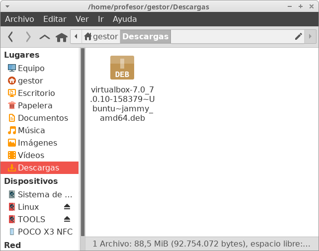
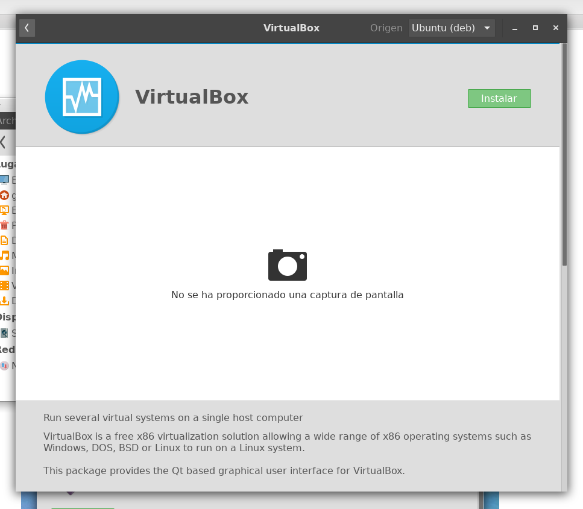
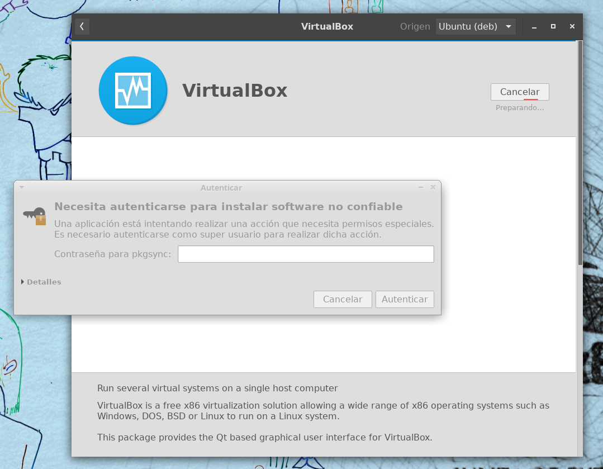
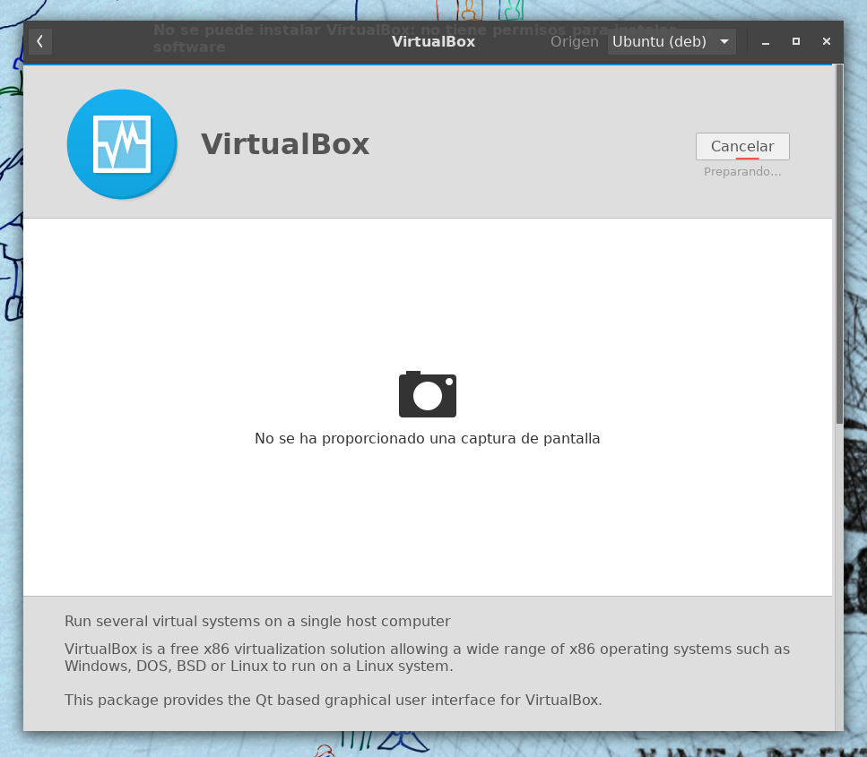
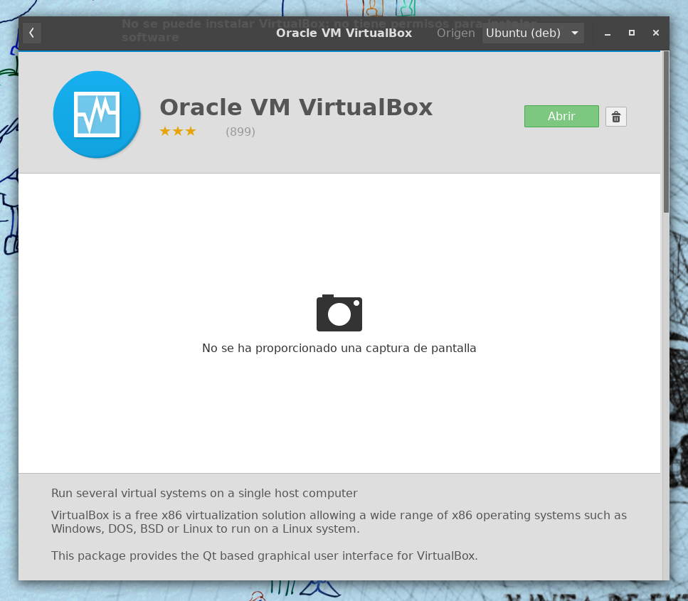
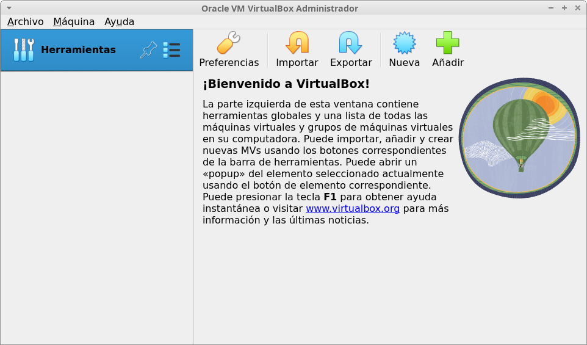

Proceso de instalación
En este apartado, vamos a ver cómo instalar el paquete de VirtualBox en Ubuntu 22.04 desde el entorno gráfico. Para ello, una vez descargado el paquete correspondiente a nuestra distribución, lo buscamos en el explorador de archivos:

A continuación, hacemos un doble clic sobre el nombre del paquete deb.
Se iniciará el instalador de Software de Ubuntu:

Al realizar clic sobre el botón "Instalar" habrá dos posibilidades:
- Que nuestro usuario tenga privilegios de instalación, por estar incluido en el grupo sudo o en cualquier otro grupo que le permita realizar instalaciones. En este caso, se nos solicitará que introduzcamos nuestra contraseña.
- Que nuestro usuario no tenga privilegios de instalación. En cuyo caso, se nos solicitará que introduzcamos la contraseña del administrador, es decir, la contraseña del usuario root.
Introducid la contraseña que corresponda en vuestro sistema.
En la máquina donde nosotros estamos realizando la instalación, nuestro usuario no tiene privilegios de instalación, y, por tanto, el sistema nos solicita que introduzcamos la contraseña de administrador:

Una vez introducida la contraseña, comenzará el proceso de instalación:

Si todo va bien, comprobaremos que el paquete ha sido instalado:

Y ya podremos cerrar el instalador de software.
Una vez instalado VirtualBox, podemos buscar la aplicación en el menú para comprobar que se abre sin problemas.
